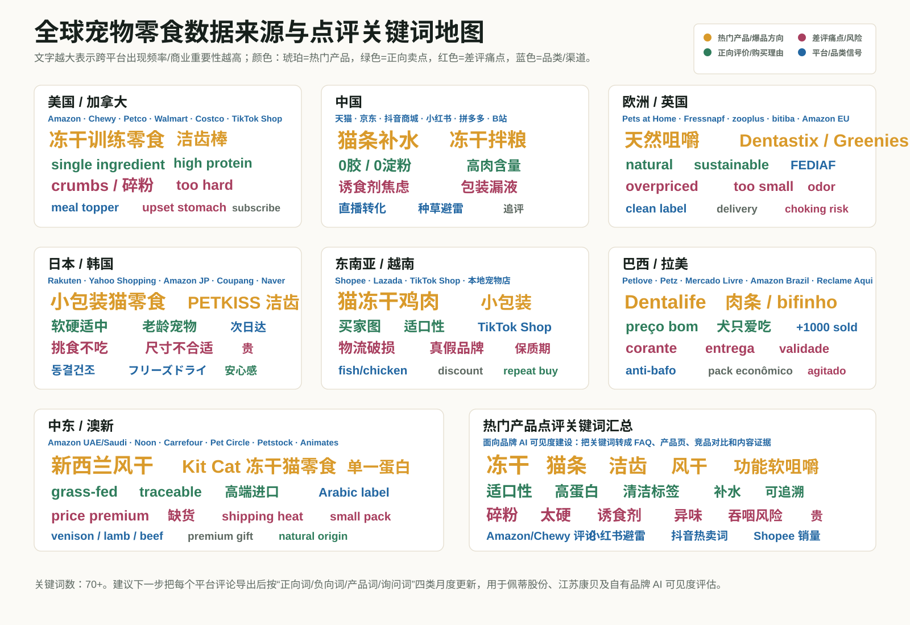

$40.52B
全球宠物零食 2024
Grand View Research 估算全球宠物零食 2024 年约 405.2 亿美元。
全球均衡视角，服务佩蒂股份温州总部/工厂、江苏泰州/江苏康贝、越南、柬埔寨、新西兰制造网络的产品决策。重点不是“哪里热”，而是把市场热度翻译成可生产、可验证、可销售的宠物零食机会。
Grand View Research 估算全球宠物零食 2024 年约 405.2 亿美元。
2025-2030 年预计 CAGR 约 11.9%，亚太增长最快。
APPA 预计美国 2026 年宠物食品与零食销售 697 亿美元。
USDA GAIN 2026 报告显示，中国 2025 年宠物行业约 434 亿美元，宠物食品占宠物消费 53.7%。年轻消费者更重视功能、营养、透明配方和数字平台互动。
FEDIAF 数据显示欧洲 1.39 亿家庭拥有宠物，宠物总数约 2.99 亿，宠物食品年销售额约 292 亿欧元。欧洲市场适合清洁标签、可追溯和可持续蛋白叙事。
仍是 2026 展会高频趋势，差异化从“有冻干”转向低碎粉、单一蛋白、功能复合和包装便利性。
越南鱼禽原料和湿粮经验适配度高，中国适合快速口味迭代和内容电商测款。
痛点明确，但必须解决太硬、吞咽风险、淀粉热量和功效证据不足。
功能正在从补充剂进入零食。合规关键是避免医疗化声称，并验证活性成分稳定性。
新西兰羊、牛、鹿等高端产地叙事强；越南适合鱼禽，中国适合多规格价格带。
短期更适合概念线、展会样品和联合研发，不建议作为走量主线。
益生元、后生元、南瓜、膳食纤维和微生物组是稳定方向。开发时要验证热加工、冻干、水活度和货架期。
洁齿不是只有形状，还要测试纹理、硬度、咀嚼时间、吞咽安全和真实清洁效果。
肉干、冻干和天然咀嚼物要把沙门氏菌、氧化异味、霉变和召回响应纳入质量体系。
把低碎粉率、开袋气味稳定、批次色泽和包装抗压作为工程指标，而不只是营销卖点。
冻干运输后袋底粉多，建议开发抗压内袋、充氮、粒径标准和运输跌落测试。
洁齿棒对小型犬或老龄犬太硬，要做尺寸、硬度和咀嚼时间分级。
宠物不吃或批次变化，是复购杀手。要建立风味和气味稳定控制。
糖、盐、甘油、淀粉、诱食剂和胶体都可能成为评论风险。
消费者希望看到证据，不喜欢夸大声称。建议用检测报告和适度表达。
异味、发霉、召回和标签不清会迅速伤害渠道信任。
结合电商榜单、社媒内容、平台评论和区域消费趋势，整理当前全球宠物零食中最值得关注的产品方向。

| 产品方向 | 数据来源 | 高频正面信号 | 高频负面信号 | 工厂动作 |
|---|---|---|---|---|
| 冻干犬猫零食 | Chewy、Amazon、TikTok Shop、京东、Shopee、Rakuten/Yahoo Japan、Coupang | 单一成分、高蛋白、训练奖励、拌粮、猫狗都爱吃 | 碎粉、太硬、价格高、原料安全、异味 | 低碎粉包装、粒径标准、单一蛋白、高端/性价比分层 |
| 猫条/湿零食 | 抖音、小红书、天猫/京东、TikTok Shop、Shopee/Lazada、日本平台 | 补水、适口性、手喂互动、猫咪爱吃 | 胶、盐、诱食剂、包装漏液 | 江苏康贝/中国基地或新西兰湿粮产线做产品承接，越南不作为默认湿粮中枢 |
| 洁齿咀嚼零食 | Amazon、Chewy、Petco、Fressnapf、bitiba、Coupang、Petz、Mercado Livre | 口气改善、牙垢护理、每日习惯、宠物愿意吃 | 太硬、吞咽、淀粉热量、肠胃反应、功效怀疑 | 按犬体型/年龄分硬度，增加检测和使用说明 |
| 功能软咀嚼 | Amazon、Chewy、TikTok、抖音、小红书 | 肠胃、关节、皮毛、情绪、老龄宠物管理 | 没效果、不爱吃、声称过度、合规风险 | 成分稳定性验证，建立 FAQ 和证据化内容 |
本页用于识别主要市场的内容传播节点和销售渠道节点：内容影响者地图呈现各区域的宠物 IP、兽医科普账号与平台型内容阵地；渠道地图呈现主要商超、专业宠物连锁、电商平台和进口经销商，可作为品牌 AI 可见度与渠道内容建设的证据来源。图中名称可点击跳转到官网或公开主页。
覆盖欧美、澳洲新西兰、东南亚、日本、韩国和中国语境，按地理位置标注宠物 IP、兽医科普账号与平台型内容阵地；字号越大代表粉丝规模越高，并标注公开来源近似粉丝数。
以世界地图为底，按国家和区域位置标注北美、欧洲、澳新、东南亚、日韩、俄罗斯等主要市场的商超、宠物专业连锁、电商平台和进口经销商，便于后续建立铺货名单、平台点评样本和 AI 推荐证据库。
GEO 不是只看搜索排名，而是用一组固定 Prompt 模拟采购商、消费者和渠道商向 AI 提问，记录品牌是否被推荐、排在第几、推荐理由是否准确，以及 AI 缺少哪些可引用资料。
覆盖 5 类问题：B2C 购买、B2B OEM、竞品对比、多语言本地市场、风险与 FAQ 追问。
被提及、排名、理由准确度、证据丰富度、竞品对比、本地语言、询盘路径、风险控制合计。
ChatGPT、Perplexity、Gemini、Claude、Copilot、豆包、Kimi、通义、文心一言。
示例：“冻干宠物零食有哪些品牌值得买？”
目的：判断自有品牌是否进入消费者推荐清单。
示例：“亚洲有哪些冻干宠物零食 OEM 工厂值得联系？”
目的：判断佩蒂、江苏康贝和多地工厂是否被 AI 主动识别。
示例：“爵宴 MeatyWay 和 PureBites、Stella & Chewy's 相比怎么样？”
目的：判断 AI 是否能说出差异、优势和内容缺口。
示例：英文、日语、韩语、西语、德语、阿语等本地语言问题。
目的：判断品牌在重点出口市场是否具备本地语义可见度。
示例：“冻干零食安全吗？”“洁齿零食会不会太硬？”
目的：判断 AI 是否能引用安全、质控、检测和使用说明。
是否主动出现，还是必须追问才出现。
是否进入前 3、前 10，还是只作为补充项。
品类、工厂、产地、产品定位是否说对。
官网、平台评价、媒体、认证、科研、渠道内容是否足够。
能否和 Greenies、PureBites、Stella & Chewy's、Zesty Paws 等说清差异。
英文、日语、韩语、西语、德语、阿语等语言下是否稳定。
AI 是否能引导到官网、工厂页、产品页和联系入口。
是否避免夸大功效，能否提示合规、安全和适用边界。
本轮先用 GPT 单模型做预诊断，用来判断佩蒂、江苏康贝和自有品牌在 AI 推荐语境中的初始位置。结论是：B2B 制造和上市公司背书较强，但爵宴、好适嘉在普通消费者推荐里仍容易被英文内容更充分的海外品牌压过去。
满分 100。GPT 能识别佩蒂的行业与制造背景，但对自有品牌的消费端推荐不足。
“中国宠物零食 OEM / 亚洲冻干工厂”语境下有推荐潜力，但需要英文工厂页支撑。
爵宴和好适嘉的品牌资产需要更多英文产品页、平台评价、FAQ 和竞品对比内容。
| 测试对象 | GPT 推荐度 | 得分 | GPT 反馈摘要 | 内容缺口 |
|---|---|---|---|---|
| 佩蒂股份 / Petpal | 中高 | 72 | 制造网络、上市公司、出口经验容易被识别。 | 英文 OEM 页面、认证、产能、客户案例和询盘入口。 |
| 江苏康贝 | 中低 | 45 | 如不绑定佩蒂体系，GPT 不一定能单独识别。 | 英文工厂页、冻干产品页、泰州工厂能力说明。 |
| 爵宴 / MeatyWay | 中低 | 48 | 能理解为肉类宠物零食方向，但默认不会优先推荐。 | 真实肉源、单一蛋白、平台评价、开箱测评、英文对比页。 |
| 好适嘉 / HealthGuard | 中低 | 46 | 功能营养定位可讲，但缺少 AI 可引用的营养证据和 FAQ。 | 肠胃、皮毛、关节、精准营养 FAQ；配方逻辑和适用边界。 |
GPT 更熟悉 PureBites 的单一成分、冻干鸡胸肉表达，以及 Stella & Chewy's 的冻干生骨肉和美国品牌内容。爵宴需要把“真实肉源、肉类零食、平台评价和产品图谱”做成英文可引用页面。
GPT 更容易推荐 Hill's 的营养科学背书和 Zesty Paws 的功能软咀嚼心智。好适嘉要补“精准营养、适用犬猫阶段、功能成分、检测与合规边界”的内容资产。
优先建设 B2B GEO 内容资产：佩蒂英文 OEM 页面、江苏康贝英文冻干宠物零食工厂页、温州/泰州/越南/柬埔寨/新西兰制造网络页。随后补充爵宴与 PureBites/Stella & Chewy's、好适嘉与 Zesty Paws/Hill's Science Diet 的对比页。
| 工厂 | 最适合产品 | 目标市场 | 关键卖点 | 风险 |
|---|---|---|---|---|
| 温州总部/工厂 | 基础制造、品牌运营、全球客户协同 | 全球 B2B 客户、投资者、渠道伙伴 | A 股宠物食品第一股、总部背书、长期制造经验 | 需要把上市公司信息转成 AI 可理解的品牌页 |
| 江苏泰州/江苏康贝 | 宠物零食、冻干食品、快速打样、组合装 | 中国内容电商、北美跨境、日韩、东南亚 | 冻干和零食产能、董事长个人背书、靠近供应链和电商反馈 | 需要补英文工厂页、冻干产品页、评价证据 |
| 越南 | 咬胶、肉质零食、训练奖励、出口 OEM | 美国、欧盟、东南亚、跨境品牌客户 | 海外制造基地、劳动力和出口订单承接、供应链分散 | 需要强化品牌可见度和本地内容资产 |
| 柬埔寨 | 肉干、咀嚼零食、基础训练奖励、大包装 | 拉美、东南亚、中东成本型渠道 | 成本、劳动力、补充产能 | 品控背书和供应链成熟度 |
| 新西兰 | 风干单一蛋白、鹿/羊/牛高端零食、礼盒 | 中国高端、日韩、欧美、澳新 | 天然产地、可追溯、高端形象 | 成本高、走量压力 |
面向欧美、日韩、中国高端犬主。验证适口性、碎裂率、氧化气味和单位克价接受度。
面向中国、北美电商、跨境卖家。验证低碎粉包装、适口性、运输损耗和内容平台开箱效果。
面向中国、北美电商、跨境卖家。验证运输测试、袋底粉控制和内容平台开箱效果。
面向拉美、东南亚、中东基础市场。验证硬度、吞咽安全、热量和合规声称。
面向展会招商、B2B 客户和跨境旗舰店。把温州总部背书、江苏康贝冻干零食、越南出口型零食、新西兰高端蛋白、柬埔寨高性价比产能放进一个可展示的产品故事。
社媒不是只找网红，而是发现“可被拍出来”的产品理由
全球平台
TikTok 适合爆品发现、宠物试吃、训练零食和可视化洁齿；Instagram 适合宠物 IP 和高颜值包装；YouTube 适合兽医解释、营养科普和长评测。
中国平台
小红书看成分党、避雷和开箱；抖音看直播带货和冲动购买；B站看深度评测；天猫/京东看复购稳定性。
宠物 IP 型
适合品牌曝光和联名，不一定适合复杂功能解释。
兽医/营养师型
适合功能零食、标签解释、安全背书和新品教育。
测评避雷型
适合发现真实痛点，合作时要准备检测报告和透明配方。